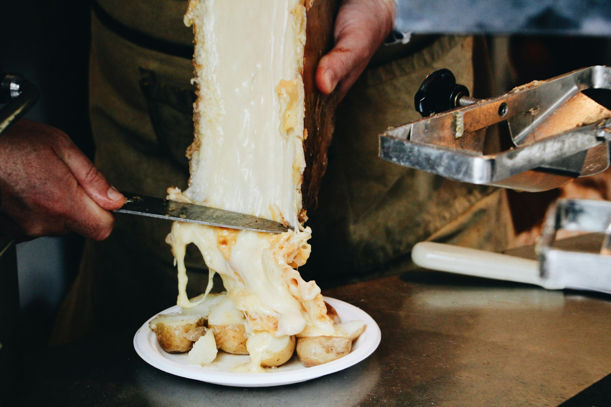
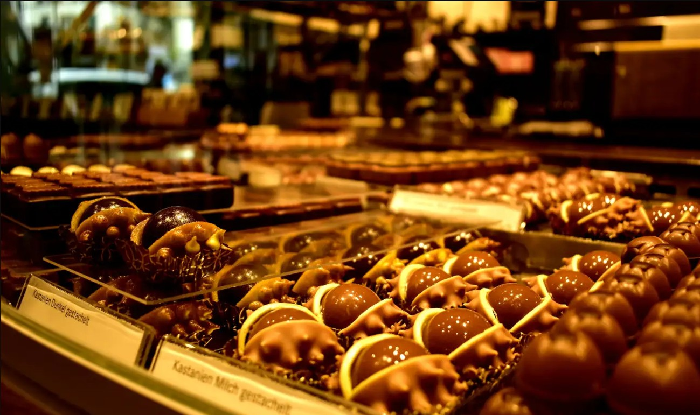
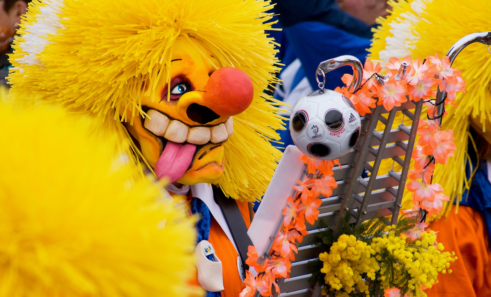
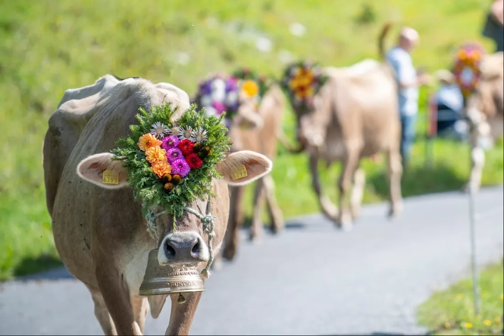

Gastronomía
Fondue de Queso
El plato más icónico de Suiza. Queso Gruyère y Emmental derretidos en cazuela de barro, acompañado de pan y papas.
Vive la cultura y tradición suiza
Fondue, raclette y chocolate
El plato más icónico de Suiza. Queso Gruyère y Emmental derretidos en cazuela de barro, acompañado de pan y papas.

Queso semiduro del cantón de Valais, derretido y servido sobre papas con pepinillos y cebollitas encurtidas. Un clásico alpino.

Suiza es la cuna del chocolate con leche. Marcas como Lindt, Toblerone y Läderach son reconocidas en todo el mundo.

Tiras de ternera en cremosa salsa de champiñones y vino blanco, servidas con rösti de papa. El plato más representativo de la cocina zurichesa.

Museos, festivales y patrimonio histórico
Suiza cuenta con más de 1000 museos. Destacan el Kunsthaus de Zúrich, el Museo Olímpico de Lausana y el Museo Nacional Suizo.

El casco histórico de Berna y el ferrocarril Rético son Patrimonio UNESCO. Suiza conserva castillos medievales, iglesias románicas y ciudades amuralladas.

El carnaval más grande de Suiza. Tres días de desfiles, música de pífanos y tambores, y disfraces elaborados en las calles de Basilea.
Uno de los festivales de música más famosos del mundo. Artistas internacionales se presentan a orillas del Lago Leman cada verano.
El festival más grande de Ginebra con fuegos artificiales sobre el lago, conciertos gratuitos, espectáculos y actividades para toda la familia.

Tradición centenaria del descenso del ganado alpino en otoño. Las vacas bajan decoradas con flores y campanas desde los pastos de montaña a los valles.
Planifica tu viaje perfecto a través de los Alpes
Explorar Destinos